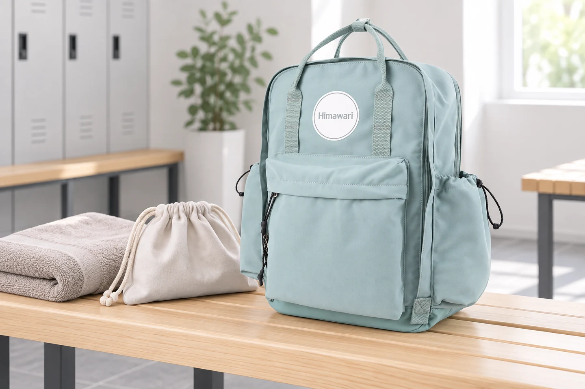

퇴근 후 운동하는 날: 갈아입을 옷보다 먼저 정할 가방 동선

아침에는 출근 가방이었다가 저녁에는 운동 가방이 됩니다. 같은 공간에 업무 물건과 운동 물건을 담을 때는 무엇을 넣는지보다 언제 꺼내고 어떤 상태로 되돌려 넣는지가 중요합니다. 오늘 할 운동에 필요한 개인 준비물을 기준으로 가방을 정리해 보세요.
장소에서 제공하는 것부터 확인하기
이용하는 곳에서 수건이나 개인 보관 공간을 제공하는지 확인하고 필요한 물건만 준비합니다. 제공 여부는 시설마다 다르므로 늘 있다고 생각하지 않습니다. 운동화를 따로 가져가야 한다면 신발 주머니까지 포함한 부피를 봅니다. 출근 짐과 함께 넣었을 때 입구가 무리 없이 닫히지 않으면 별도 가방으로 나누는 것도 방법입니다.
옷을 갈아입는 순서대로 묶기
운동복과 양말처럼 함께 꺼낼 물건을 한 묶음으로 준비합니다. 작은 장신구나 일상에서 쓰던 물건을 잠깐 넣을 빈 파우치도 정해 두세요. 탈의 공간에서 여러 칸을 한꺼번에 열지 않아도 필요한 묶음만 꺼낼 수 있도록 배치합니다. 휴대전화와 귀중품은 시설의 보관 안내에 맞춰 직접 관리합니다.
돌아오는 짐의 상태를 생각하기
사용한 옷과 수건은 출발할 때와 상태가 다릅니다. 젖거나 땀이 밴 물건을 업무 서류와 전자기기에 바로 닿게 넣지 않도록 별도 보관 주머니를 준비합니다. 신발도 다른 물건과 분리합니다. 일반 백팩 자체가 젖은 물건을 위한 방수 수납함이나 신발 전용 가방이라고 가정하지 않는 것이 중요합니다.
집에 도착하면 운동 묶음부터 꺼내기
귀가 후에는 사용한 옷과 신발 주머니를 먼저 꺼냅니다. 다음 운동 때까지 닫힌 백팩 안에 두지 말고 각 물건의 관리 안내에 맞게 정리하세요. 가방 안쪽에도 물기가 남았는지 확인합니다. 사진 속 No.1089는 외출 장면의 예시이며, 자신의 운동화와 업무 짐이 함께 들어가는지는 실제 치수와 형태로 확인해야 합니다.
참고·안내
- Himawari No.1089 제품 정보
- 실제 Himawari No.1089 제품 사진을 참조한 AI 연출 이미지입니다. 주변 소품은 구성품이 아닙니다.
자주 묻는 질문
사진 속 가방의 수납 크기는 어떻게 확인하나요?
이미지의 비율만으로 수납 가능 여부를 판단하지 말고, 선택한 옵션의 실제 치수와 입구 형태를 제품 안내 또는 문의로 확인하세요.